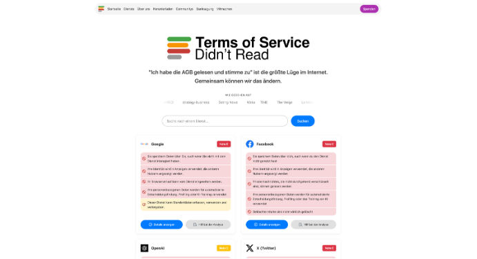

Ausstellung 1: Das Labyrinth der AGB‘s
Raum 1:
Definition
Nach § 305 Abs. 1 Satz 1 BGB ist die offizielle Definition wie folgt:
„Allgemeine Geschäftsbedingungen sind alle für eine Vielzahl von Verträgen vorformulierten Vertragsbedingungen, die eine Vertragspartei (der Verwender) der anderen Vertragspartei bei Abschluss eines Vertrags stellt.“
Ursprung
Mitte des 19. Jahrhunderts kam es durch die industrielle Revolution zu einem regelrechten Boom. Es war unmöglich, mit Millionen Kunden Einzelverträge auszuhandeln. Das hätte zu viel Zeit in Anspruch genommen und Unmengen an Bürokratie erzeugt. Deshalb haben die Konzerne Verträge standardisiert und einseitig vorformuliert, um Zeit und Kosten zu sparen. Da es damals noch keine Gesetze gegen unfaire AGBs gab, war es fast Standard, dass Unternehmen ihre Kunden mit den AGBs ausnutzten.
Um den einseitigen Ausnutzungen durch Unternehmen entgegenzuwirken, griff der Staat ein.
- 1977 wurde das „AGB-Gesetz“ als erste gesetzliche Grundlage zum Schutz von Kunden vor unfairen Vertragsklauseln eingeführt.
- 2002 wurden diese Regelungen in das Bürgerliche Gesetzbuch (BGB) integriert. Sie finden sich dort heute in den §§ 305 ff. Sie bilden den aktuellen rechtlichen Rahmen, der Verbraucher vor unangemessenen oder absurden Klauseln schützt.
Unternehmen nutzen heute psychologische Hürden, um Nutzer zur Zustimmung zu bewegen.
Übermäßige Länge: Die Dokumente sind bewusst extrem umfangreich (oft über 10.000 Wörter), sodass das vollständige Lesen aller AGB neuer Apps zeitlich unrealistisch ist (ca. 30 Stunden).
Komplexe Sprache: Die Verwendung von unverständlichem „Juristendeutsch“ (Legalese) und komplizierten Fachbegriffen erschwert das Verständnis für Laien zusätzlich.
Kalkulierte Frustration: Diese Barrieren führen bewusst zur Resignation der Nutzer. Das Ziel der Konzerne ist die „Kapitulation“ der Kunden, die daraufhin ohne zu lesen auf „Akzeptieren“ klicken.
Es gibt praktikable Strategien, um AGB im Alltag effizient zu prüfen, ohne die gesamte Dokumentenflut lesen zu müssen, und schnell einen Überblick über kritische Inhalte zu erhalten. Eine besonders effektive Methode ist die gezielte Suche nach sogenannten Alarmwörtern mithilfe der Suchfunktion (STRG + F). Beispiele für solche Wörter sind „Dritte“, „Übermittlung“, „Lizenz“, „Partner“ oder „Speicherdauer“. Diese Begriffe führen oft direkt zu den für Nutzer sensibelsten Passagen, in denen es um Datenweitergabe oder weitreichende Nutzungsrechte geht. Ergänzend dazu bietet die Plattform „ToSDR“ (Terms of Service; Didn’t Read) eine wertvolle Hilfestellung. Dort können AGB-Texte eingespeist werden, um sie in komprimierte Stichpunkte zu übersetzen. Zusätzlich bewertet die Seite die Klauseln anhand eines Schulnotensystems von A bis E. Dadurch können Nutzer schnell zwischen verbraucherfreundlichen Bedingungen und gefährlichen Klauseln unterscheiden.

Allgemeine Geschäftsbedingungen (AGB)
Bitte bestätigen Sie, dass Sie unsere AGB gelesen haben, um fortzufahren.
Raum 2:
Übersetzung der Legalese
Um AGB zu verstehen, bedarf es einer Übersetzung von ‚Legalese‘ in die Realität. Viele Klauseln dienen lediglich als Blankoschecks. Wenn eine Firma von ‚berechtigtem Interesse‘ spricht, bedeutet dies oft, dass Tracking zur personalisierten Werbung stattfindet. Nutzer müssen aktiv werden: Suchen Sie mit STRG+F nach Begriffen wie ‚dritte‘, ‚Übermittlung‘ oder ‚Lizenz‘, um die kritischen Stellen zu finden. Portale wie ToS;DR bieten hierbei wertvolle Unterstützung zur Bewertung dieser Klauseln.
Dekonstruktion von „Legalese“
Um AGB zu verstehen, bedarf es einer Übersetzung von „Legalese“ in die Realität. Viele Klauseln dienen lediglich als Blankoschecks. Nutzen Sie die Suchfunktion (STRG+F), um kritische Begriffe wie „dritte“ oder „Übermittlung“ zu identifizieren.
💡 Tipp: Portale wie ToS;DR bieten wertvolle Unterstützung zur schnellen Bewertung solcher Klauseln.